I've worked alongside
Athletic Executive, Chef, & Turnaround Consultant
I step in, build the structure, mold the blueprint, sharpen the operations, and set the financial strategy. Then I coach high-performing teams that help organizations win.
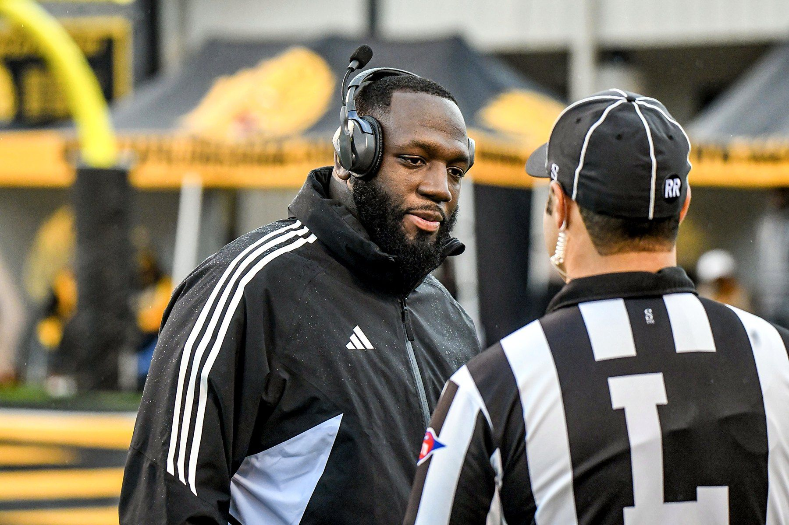
I've worked alongside


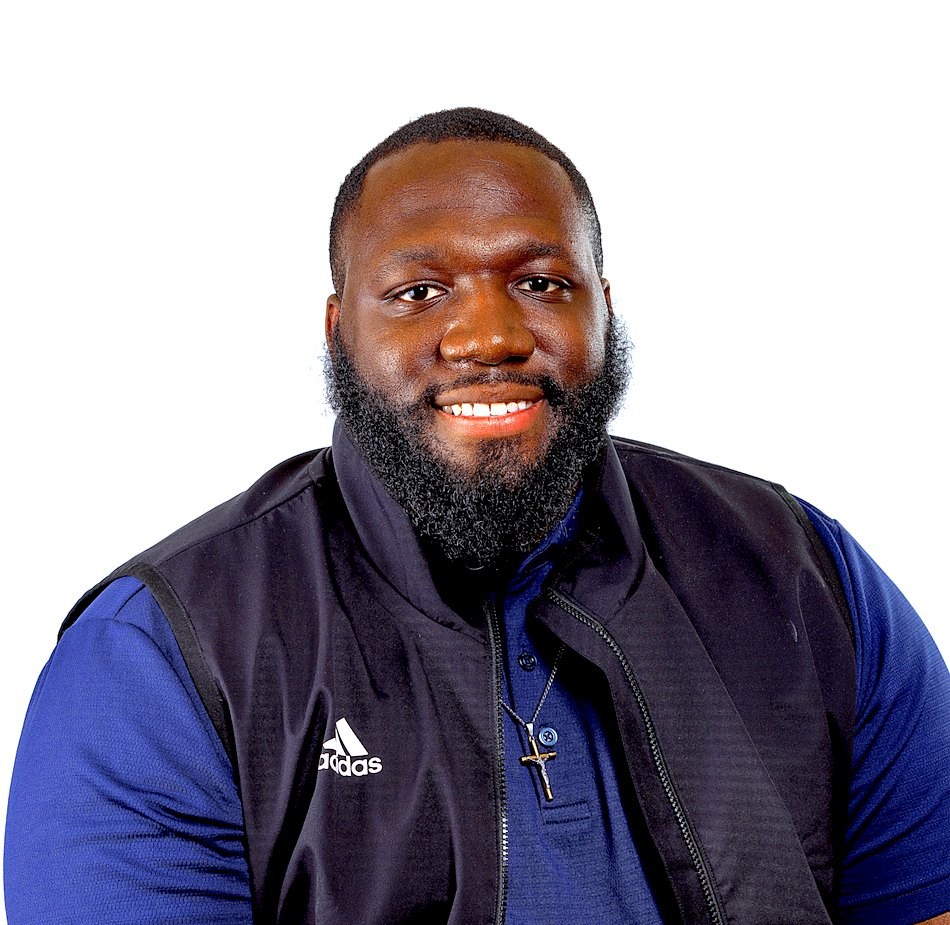
I’m Tarique Barron, born and raised in Mobile (Prichard), Alabama, a place that played a key role in helping me build a solid foundation of character, resilience, and determination. Growing up as a dedicated student-athlete, I developed a strong sense of purpose, an incredible work ethic, and the drive to excel. Over time, I discovered a passion for STEM, which shifted my path and sparked a lifelong commitment to learning and growth. My learning and sharing journey began at Auburn University and the University of Arkansas at Pine Bluff.
Since then, I’ve had the privilege of working across a variety of industries, including recruiting (higher education and corporate), higher education, non-profit sectors, education and business consulting, leadership and development consulting, government (Deloitte, Department of Education and National Science Foundation), sports (NFL and NCAA), and tech/STEM.
With the wisdom that comes from these diverse experiences, I’ve grown into a leader who deeply values giving back, serving others, and sharing what I’ve learned through mentorship. I believe in the power of changing lives one person at a time and building teams that thrive together. I’m also an avid STEM advocate, a lifelong learner, a perspective coach, and a consultant.
My goal, in any role I take on, is to build a strong and lasting foundation. Embracing adversity as an opportunity for growth, to have the perspective of Get To > Have To, and continuously pursuing personal and professional development. I aim to lead with integrity, face challenges with resilience, and remain steadfast in my commitment to constant improvement. Including, I enjoy building teams & companies to be highly efficient, functioning, and a space that is conducive for growth.
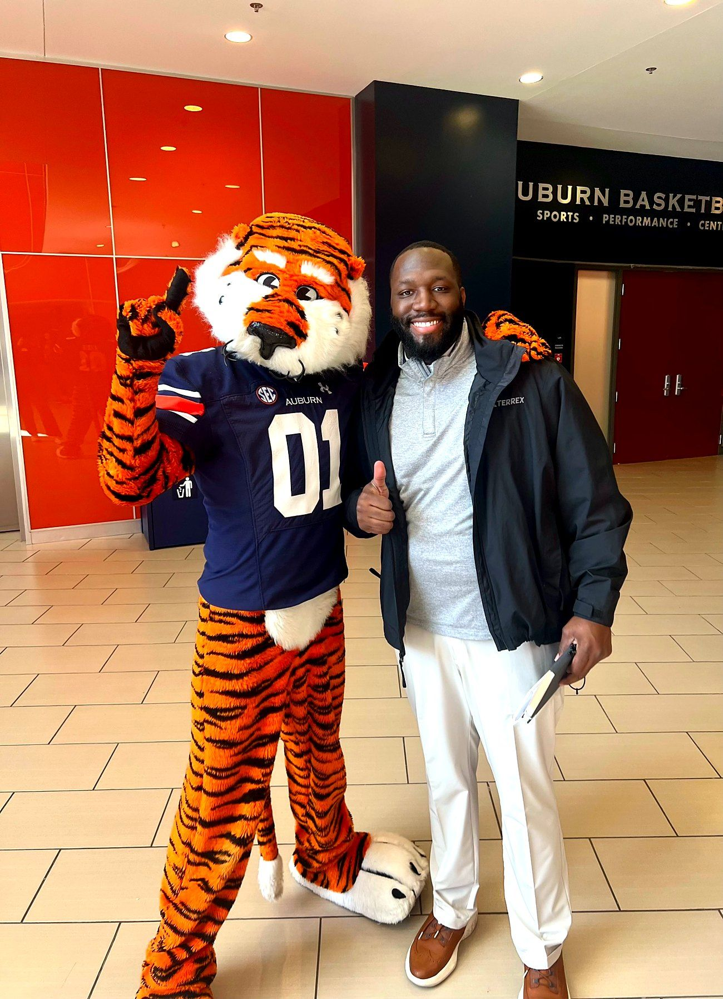
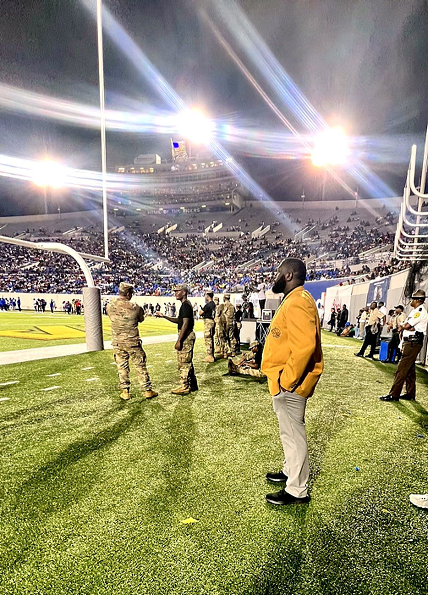
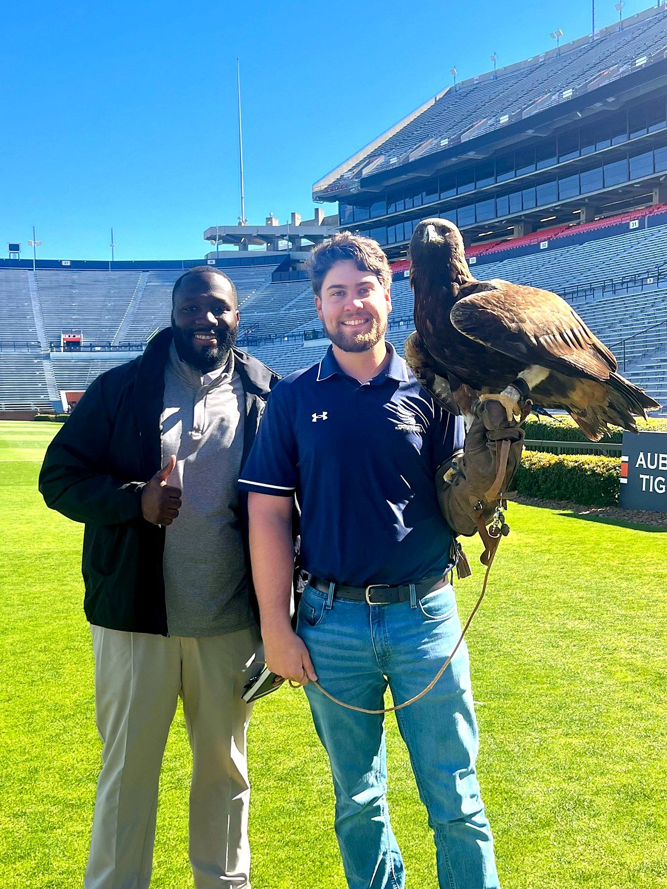
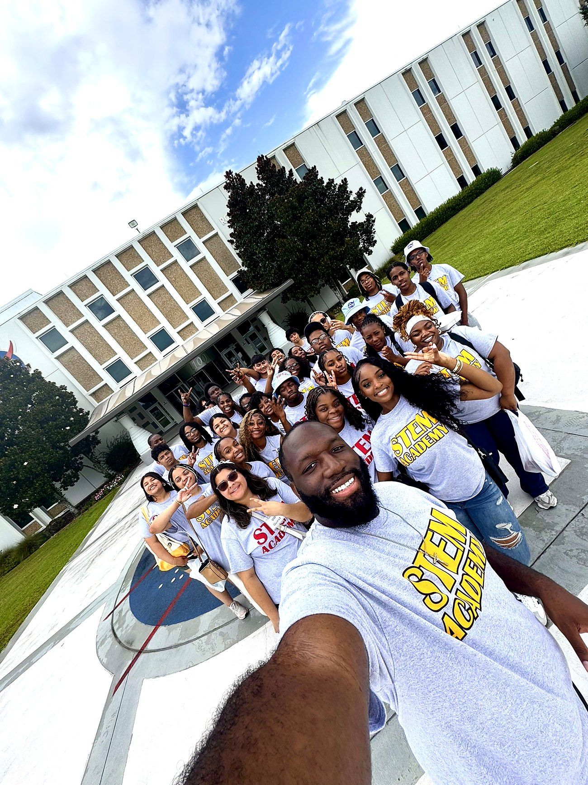
“My vision is to create an atmosphere and environment where the individuals that God has given me the honor to encounter have a higher chance to be successful in life because they were involved in our program—a program that not only focuses on building character but also emphasizes personal and professional development. By investing in their growth, both individually and collectively, we aim to equip them with the tools, mindset, and resources needed to thrive and invest in their future, ultimately empowering them to become leaders who impact the world around them.”
“We create a standard for how we want things to be done & everybody has to buy into that standard or you won’t & can’t have any team chemistry.
Everyone is held to the same High Standard. You will be held accountable. Hold yourself accountable & hold your peers accountable.
Find the lesson in moments of high adversity!”
Shift your perspective
Grow. Develop. Accomplish.
Five ways I can help, depending on what you're building.
Executive leadership of athletics and venue operations at the director-of-operations and athletic-director level: game-day and event operations, facilities and venue management, ticketing, ticket and sponsorship sales, sponsor activation, hospitality and concessions, development and fundraising, budget oversight, and NCAA, NIL and transfer-portal compliance.
On the broadcast side, currently leading production operations for ESPN+ broadcasts with Ross Video at stadiums across the country, from advance site surveys, scaffolding and equipment placement early in the week to full oversight of game-day production operations, ensuring broadcast readiness from load-in to sign-off.
Enterprise-wide turnarounds led from a CEO’s vantage point across operations, finance, human resources, sales and culture: root-cause diagnostics, stabilizing cash and liquidity, restructuring costs and the operating model, and rebuilding budgeting, forecasting and treasury management.
From there, putting governance, KPI frameworks and internal controls in place, aligning leadership and stakeholders around a clear recovery plan, and building the talent and operating rhythm for sustainable, profitable growth. Most recently led the financial turnaround of a $750M-funded AI company as interim CFO.
Enterprise systems strategy and implementation: CRM, ERP and point-of-sale (POS) platforms, data pipelines and executive dashboards, with AI-driven automation, predictive analytics and workflow optimization that take manual work out of the business.
Paired with change management that makes adoption stick: team-by-team training, phased rollouts and hands-on transition support, so the entire organization moves onto new systems smoothly.
Designing and scaling enrichment and STEM programs nationwide for institutions, communities, schools and school districts, expanding access for students who are too often left out, backed by grant strategy, staffing and community and corporate partnerships built to last.
That includes full oversight of Verizon Innovative Learning programs at more than 50 locations across the country, now in their eighth year; robotics programs, including FIRST Robotics and robotics competitions; and NASA summer camps that give students hands-on STEM and technology experience.
At its heart, this work is about giving back to the community: reaching as many students as possible and helping each one find their light-bulb moment.
Full-service, culturally inspired catering and event dining for occasions of every scale, from weddings and milestone celebrations to business functions and community events.
Also offering catering and culinary business consulting, helping food entrepreneurs build a clear, focused business plan and set up their operations for long-term success.
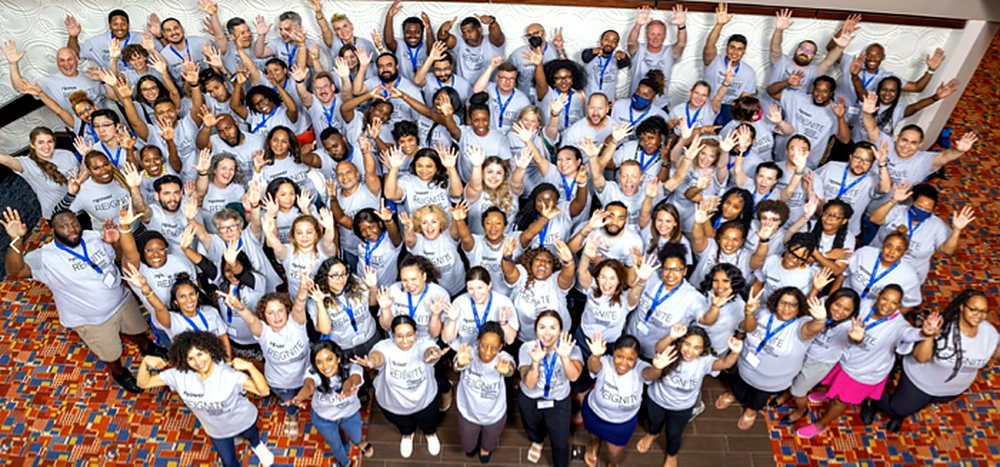
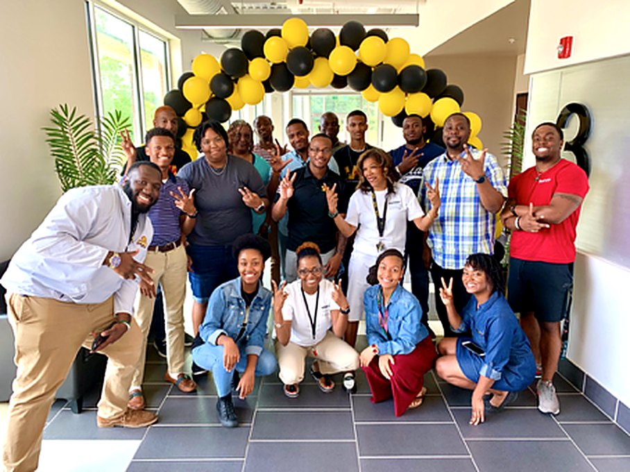
My career from 2016 to today. Open any role for the full details.
University of Arkansas at Pine Bluff · National Science Foundation grant
Led 60 staff guiding 250+ students a year into college across eight universities. Also served as Senior Recruiter, running 1,000+ academic and athletic campus tours a year.
Verizon Innovative Learning Program (NACCE) · Washington, DC – Pine Bluff, AR
Direct a nationally recognized STEM program for 400+ underrepresented middle schoolers: coding, 3D printing, AR/VR, robotics, drones and entrepreneurship.
King of the South Kitchen L.L.C. · Nationwide
Own and operate a full-service catering brand delivering high-volume, culturally inspired dining for corporate events, athletic programs, universities and private clients.
Massachusetts Institute of Technology (Npower) · Dallas, TX – New York, NY
Led AI deployments with Power 5 NCAA schools, the NFL, NBA and MLB, and directed digital modernization within a $140M budget with 75 consultants across six teams.
T.B. Consulting Group L.L.C. · Nationwide
Advise C-suite leaders, athletic departments, universities, nonprofits and enterprises on turnarounds where leadership, operations, finance and technology meet.
University of Arkansas at Pine Bluff
Led operations for 15 sports: game day, venues, sales, hospitality and concessions. Worked with ESPN on broadcasts and staged the university's first WNBA showcase.
NCAA Private Business Consulting Contract
Led NCAA guarantee-game negotiations, sponsorships and contract renewals, and managed sponsor relationships with Adidas, Pepsi, Gatorade and Cricket.
Confidential AI technology organization (turnaround contract) · Remote – Austin, TX
Led a full financial turnaround at a $750M-funded AI company, building its financial infrastructure from the ground up and handing it to a permanent successor.
Nexplore USA (contract) · Remote – Miami, FL
Direct operations across TX, FL, GA, SC and MN with a five-person team and 500+ instructors serving 225+ active classes every semester.
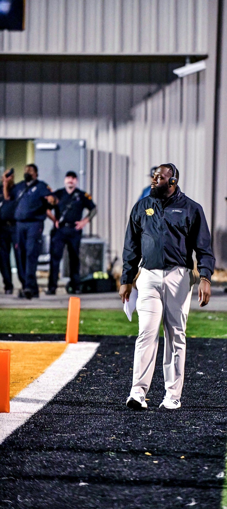
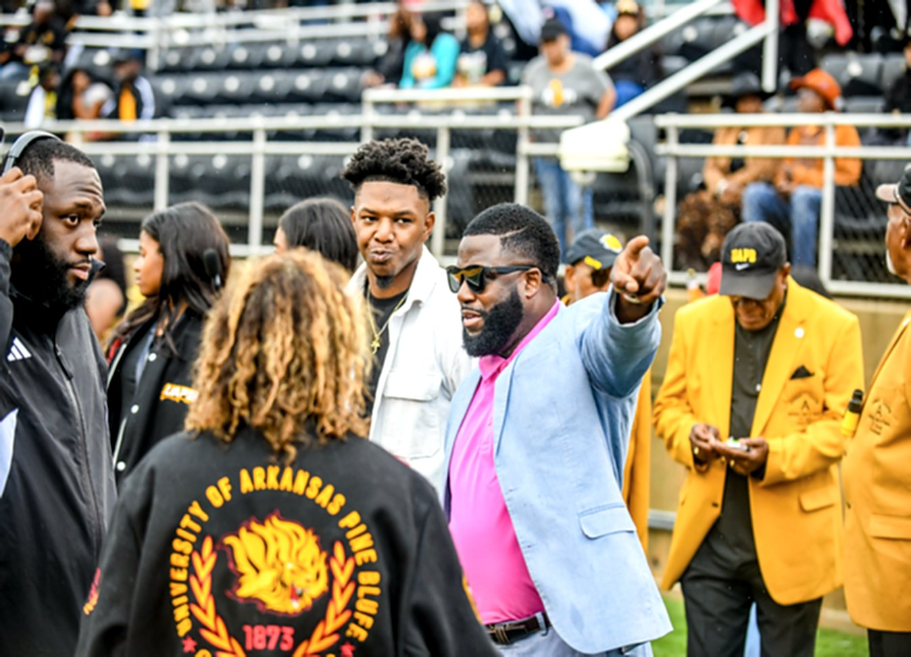
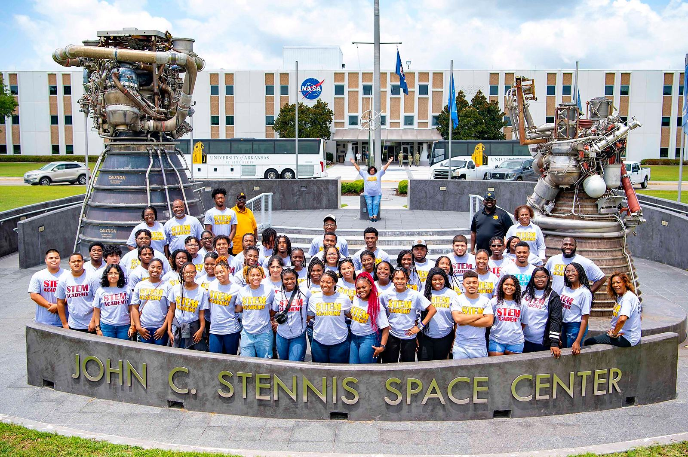
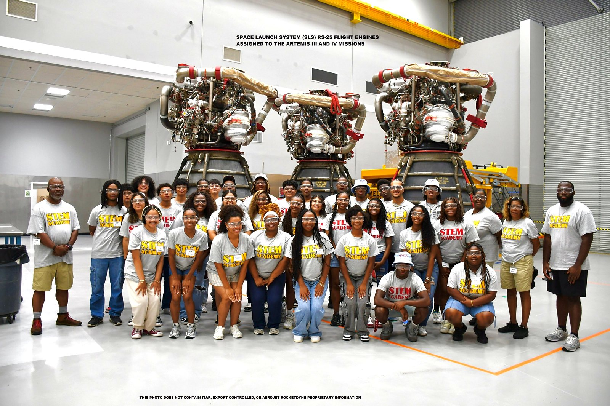
“Tarique is simply the most reliable person I know… he is relentless in his work ethic, thoughtful in his approach, considerate of every detail, and open to new solutions to get things done. I would trust Tarique to carry out any tasks whether a field in his expertise or undiscovered territory, I know the result will be no less than great. I recommend the opportunity to demonstrate these traits for hisself as the product will speak for itself.”
“I’ve had the pleasure of working with Tarique, and he’s truly one of a kind. He’s incredibly personable and makes every interaction feel effortless and genuine. His responsiveness is second to none and he’s always there when you need him, ready to tackle any challenge head-on. What really sets him apart is the family-like environment he creates at work. He fosters a sense of camaraderie and support that makes working with him not just productive but enjoyable. No matter how tough the assignment, Tarique takes it on with a smile, never backing down from a challenge. His positivity, dedication, and leadership make him an invaluable part of any team.”
“Mr. Barron is what one would call a ‘jack of all trades’ who is relentlessly pursuing excellence. He is very talented, meticulous, down-to-earth and one of the most hardworking individuals out there. 10/10 would recommend him for high-stakes complex projects or even a simple consultation-based conversation.”
My Life from 0 to 30 is my story: where I come from, the family that raised me and shaped who I am, and the adversity and obstacles I had to push through to get here.
It's also about the nontraditional way I went through college, relationships, health, and the business mindset I built along the way. Everything I've learned in thirty years, told straight.
Get an email when the book is out. No spam.
Hiring for athletics or operations leadership, planning a turnaround, booking a speaker or catering an event? Send me a note and I'll get back to you.
Want to see what others say about my leadership? Email me to request my portfolio of testimonials.